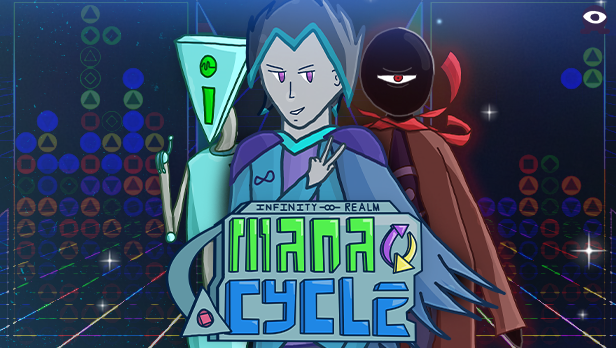
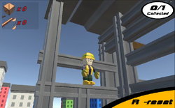
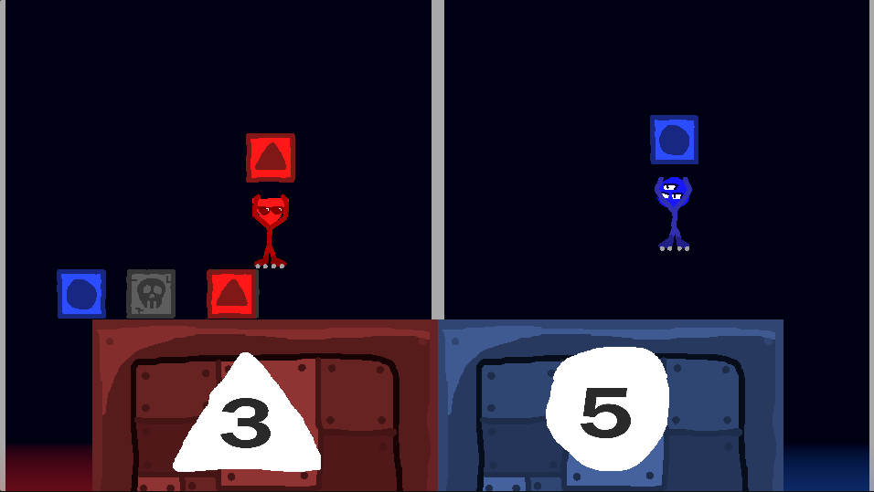
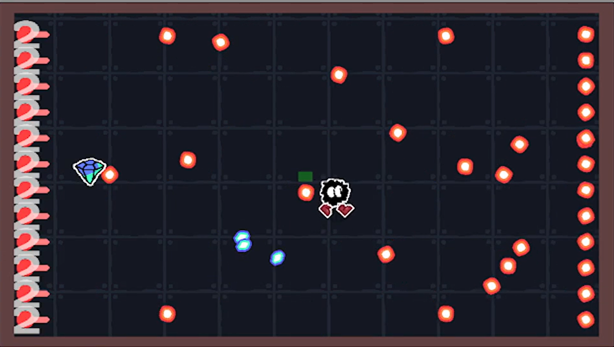
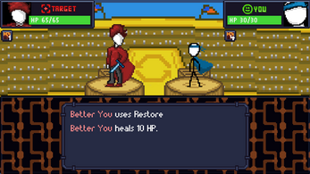
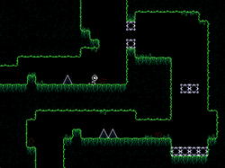

Hey, I'm Morgan Johnson (or threehalves on most informal sites). I'm a student at Missouri University of Science and Technology studying Computer Science and Computer Engineering. I do a lot of game dev as a hobby, and you can find all of my released games below. Most games are available through itch.io and have their source code available on Github as well. You can also get in contact with me or check out my itch.io / github / linkedin via the links on the left panel.

Mana Cycle
Aug 2023 - Present
A puzzle-party game built with Unity. I worked on this game along with InfinityJKA and Jackachulian. My work on this project largely consists of programming, UI, and sound design. This game is still in development with future updates in the works.

Morpho Builder
Aug 2024
A 3D puzzle-platformer I built with Unity along with InfinityJKA and Jackachulian for the GMTK 2024 Game Jam. My work on this project consists primarily of the player controller, UI and shader code.



qBattle
Sep 2023
A multiplayer game I developed solo using Unity. I made it during my first semester at MST over the course of 1 week for a game jam held their ACM chapter.

SCRIMBLO'S BULLET HELL
Feb 2024
A game I developed solo during my second semester at MST, over the course of 1 week for a game jam held their ACM chapter.

SLAY YOURSELF
Jul 2023
A game I developed with InfinityJKA and Jackachulian for the GMTK 2023 Game Jam. My work on this project consists of programming, UI and sound design.

zGame
Dec 2022 - Mar 2023
A short platformer game made in Python, developed solo. The first game I've fully released, playable both as a desktop application and on the web.